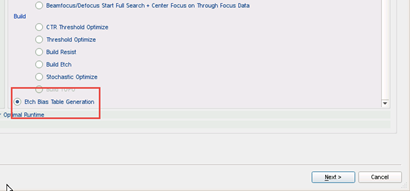

Etch bias rule tables are used when you
have a VEB etch bias retargeting process. You use etch bias rule
tables with Calibre nmBIAS to quickly adjust edges for resist target
polygons.
The Calibre nmModelflow Stage Creation Wizard has an option that
creates an etch bias rule table that collates collected measurement
data into specific rule bins.
Two input methods are available for creating etch bias rule tables:
veb —
Use veb mode when you have a previously-calibrated VEB model available.
lsf —
Use lsf (least square fit) mode when you do not have a VEB model,
but do have measured etch CD width and space data available.
Prerequisites
Basic simulation
information (a layout, gauge file, and litho model) from your post-etch process
A VEB model
inside the litho model for VEB mode
Procedure
- Examine
the gauge data file’s Resist CD (Meas) measurement and Etch CD (MEtch) measurement.
For each value, calculate the etch bias value using the following
equation:
Etch_bias/2 = (Meas - MEtch)
- Determine
the table bin conditions using an etch bias analysis on measured
data.
- In Calibre
nmModelflow, switch to the Database Browser, and select Stage from
the database tree.
- Create
a new stage by clicking the Add Using Wizard button.
- In the
Flow Stage Wizard, select the Etch Bias Table Generation option
and click Next.

- In most
cases, you can leave the Select VEB Fit Type, Force_etch_bt0, and
Density Collection settings to their defaults, because these options
do not influence the bias rule table generation.
Select VEB Fit Type —
Sets whether the error criteria is relative (compared to the etch
bias) or absolute (compared to the measured etch) for the best fit.
Force_etch_bt0 —
Sets a speed toggle; use On for higher calibration speed at the cost
of calibration accuracy.
Density Collection —
Adds VEB density kernel information to the output.
- If you
want to create more than one etch bias table, click “+”
to add a new tab. Each tab is its own separate etch bias table definition.
Note: You can use the Update Tab Name field to rename
a tab.
- Choose
the method for creating the etch bias rule table. Set additional
controls based on your method selection:
For
the veb Method, set the following specific controls:
Length
Constraint — Selecting this checkbox adds the ability
to set length constraints in addition to space and width constraints.
Dump Patterns, Dump Gauges, Dump Patterns Size —
Set these optional fields to examine the gauge file generated by
Calibre nmModelflow for this etch bias rule table.
For the lsf
Method, set the following specific controls:
Extra —
Sets the search radius around each structure for gauges.
Order —
Sets the order of the internal equation polynomial used to fit the
data.
a1*space2 + a2*space*width + a3*width2 + a4*space + a5*width + a6
The recommended value is 2 (using just a1 and
a2).
Higher values increase fitting accuracy at the cost of speed; lower
values are less accurate but calculate faster.
gauges_avg, gauges_n, gauges_stdev —
Selecting one or more of these checkboxes adds a separate file to
the output showing the gauge measurements in bins sorted by average
bias (avg), numeric frequency (n), and standard deviation (stdev).
Use Valid Gauges —
By default, only gauges that are in the table (have values that
fall between min and max width and space ranges) are included in
the output. Changing this field to “all” includes all generated
gauge values.
Inverse —
Optional. Changes the fitness test for width and space to be 1/width and
1/space.
Measure From —
Sets whether the error calculations are measured from the generated
layout, the gauges in the table, or the specified pitch. It changes
the source of the width and space terminology for the table bins.
The recommended value is ‘pitch’, which reads from the layout and
measurement data (Metch).
- Set up
the bias table bins by selecting specifying up to five interval
ranges in the Rule Table Parameters section for the Width and Space
fields (plus Length for Method veb only). The values you set have
the following effects:
Min
and Max values set the start and end ranges for width and space
CDs. All bins are generated between the specified values, including
the start and end values.
The Interval
setting indicates the size of the bins as a step function. For example,
the default Width value of Min_Width 50, Max_Width 300, Interval
10 generates bins of 50, 60, 70, 80 ... 300.
If additional
Width, Space, or Length lines are defined, a bin is added at that
value and the interval changes to the new setting. For example,
if Width1 90 Interval 20 and Width2 150 Interval 30 are specified,
the intervals generated are 50, 60, 70, 80, 90, 110, 130, 150, 180,
210, 240, 270, and 300.
For lsf mode
only, you can select the Autobin radio button to cause Calibre nmModelflow
to generate bins automatically based on the gauge set, with the
ability to set specific boundaries if desired.
- (Optional)
Set the output options (Out Precision, Out Format, Out Unit, Out
Path, and Out File) if you want to adjust the file output from the
default settings.
- (Optional)
If you have defined multiple tabs, you can select Merge Table Options
to open up an additional section where you can specify combined
and unified outputs for the generated tables.
- Click Next to
continue to the results screen. Change the default description and
do final command adjustments if needed, and then click Finish.
-dump_invalid_gauges
— Instructs Calibre nmModelflow to write all invalid gauges in an
lsf file to a separate file (invalid_gauges.gg is
the default filename).
-min_litho_cd_space,
-min_litho_cd_width — Sets a minimum value for space or width CDs
for bias values. If a bias value violates the specified limit, its
cell value is updated to fit the CD.
-litho_cd_violations_file
— Defines a file to write a list of bins where bias minimums were
violated.
Results
A new stage is created in the Stage list. When run as part of
a calibration job, the output of the stage is one or more etch bias
table spreadsheets using the data in the specified gauge file.
You can find the files created by this job in the following directory
by default:
mdf/database/mdfRepository/calibrationjobtable/CJ-<job#>/Data/etch_rule_table/
The file name for the etch bias table is set in the Output File
field. The default filename is based on the following criteria:
Single or first etch rule table — etch_rule_table.csv
Additional rule tables (multiple tabs) — etch_rule_table_<n>.csv
Length constraint specified —
If the Length Constraint checkbox is selected for an etch bias table
definition, multiple etch rule table files are generated for the
given width and space definition. Each table is a width x space
table, generated for a specified length. The format of the filename
is modified to be:
etch_rule_table_L_<n>_<length>.csv
Note: If you specify the -out_path with a literal “<length>”
string, the generator outputs multiple separate directories with
the length string filled in as appropriate.
Note: Output spreadsheets separate fields with semicolons instead
of commas.
If you selected any Merge Table options, additional files are
created for the combined and unified tables. See “Combined and Unified Etch Bias Tables” for more
information.
Note: An additional directory, etch_bias_table_storage, is also
generated. This directory is used by the Calibration Job Record Dialog Box to generate
an Etch Bias Report entry, and its contents can be ignored.